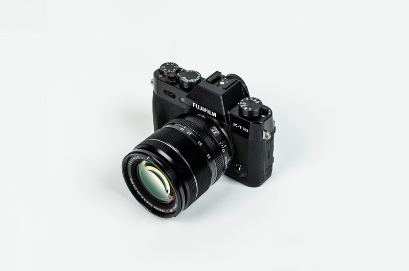

Good portraits usually start before the shutter clicks. When your exposure settings, focus choices, and white balance are working together, it becomes much easier to concentrate on expression and connection rather than troubleshooting the camera mid-session.
Aperture shapes the look
For most portraits, we work between f/1.8 and f/3.2 depending on the number of people in the frame and how much background detail we want to keep. Wider apertures create that soft separation clients love, but larger groups often need a slightly narrower setting to keep faces sharp.
Shutter speed protects the moment
Movement is often more subtle than photographers expect. Children shifting, wind in hair, or even the small sway of a standing subject can soften a portrait, so keeping shutter speed comfortably above your focal length is a reliable habit.
"The right setting is the one that supports the moment you want to preserve, not the one that looks best on paper."
ISO, white balance, and focus finish the frame
ISO should stay as low as light allows, but not at the expense of sharpness. White balance matters because flattering skin tones carry the emotional weight of portrait work, and focus should almost always lock onto the nearest eye for a polished result.


Final takeaway
If you learn to adjust these five settings quickly, you spend less time looking at the back of the camera and more time directing people with confidence. That shift alone improves portrait quality more than most gear upgrades.